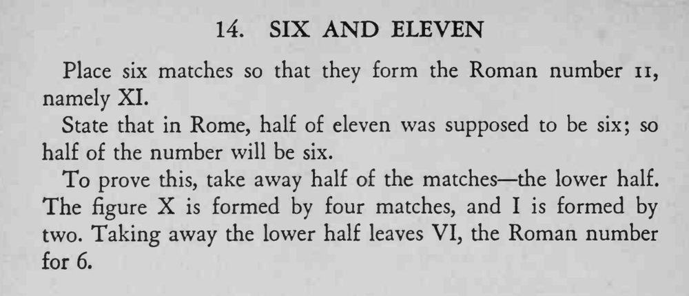

六根火柴摆成罗马数字 XI，取走下半部分后，剩下的上半部分正好成了 VI——也就是六。
这是借「数字」和「根数」做文字游戏，先别急着解释，让观众自己上当。

Place six matches so that they form the Roman number n, namely XI. State that in Rome, half of eleven was supposed to be six; so half of the number will be six. To prove this, take away half of the matches the lower half. The figure X is formed by four matches, and I is formed by two. Taking away the lower half leaves VI, the Roman number for 6.